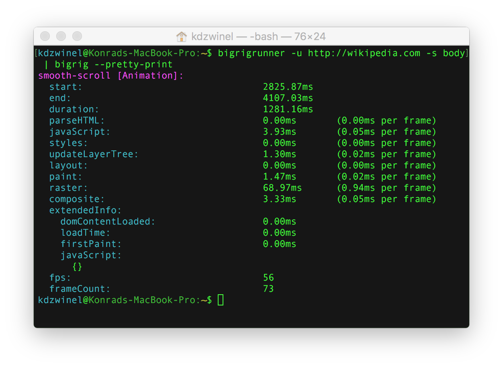
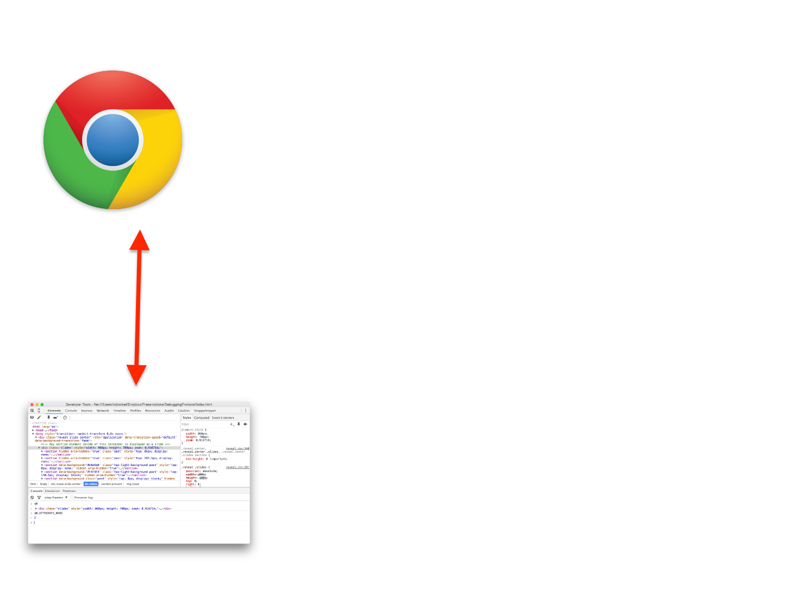
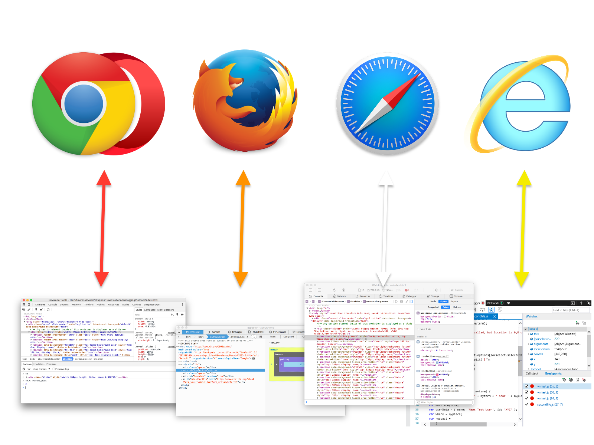
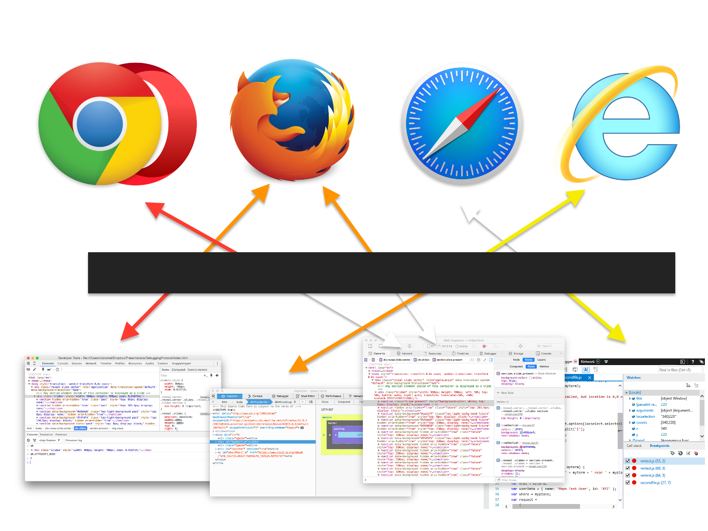

Hello!


Remote Debugging Protocol
- DOM.highlightNode
- Network.setUserAgentOverride
- Debugger.setBreakpoint
- Runtime.evaluate
- HeapProfiler.takeHeapSnapshot
- +280 more


?

Editors & IDEs
- Brackets
- Light Table
- Sublime Text
- WebStorm
- Vi

Monitoring & Testing
chrome-remote-interface
var Chrome = require('chrome-remote-interface');
Chrome(function (chrome) {
with (chrome) {
Network.enable();
Page.enable();
// log all requests before they are sent
Network.requestWillBeSent(function (params) {
console.log(params.request.url);
});
// once page loads, navigate to another page
once('ready', function () {
Page.navigate({'url': 'https://github.com'});
});
}
});
Chrome extensions - debugger API
// attach debugger to a specific tab
chrome.debugger.attach({
tabId: tabId
}, '1.1', function() {
// navigate to another page
chrome.debugger.sendCommand({
tabId: tabId
}, 'Page.navigate', {
url: 'https://github.com'
});
});
?
Alternative DevTools "back-ends"
- Android - Stetho
- iPhone - PonnyDebugger
- Node.js - Node-inspector



Debugging protocol adapters
- Chrome → IE11 - IEDiagnosticsAdapter
- Chrome → Safari - iOS WebKit Debug Proxy
- Chrome → Firefox - RemoteDebug Firefox Adaptor
- Firefox → Safari, Chrome - Valence